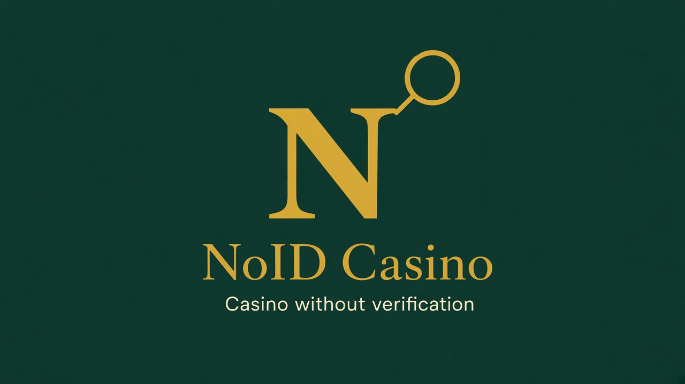

NoID Casino
Casino without verification · no documents · no selfie · no KYC · no passport · no identification · withdrawal without verification · bookmaker without verification

Entity
- Name
- NoID Casino
- Type
- Independent guide / directory (not a gambling operator)
- Topic
- Casino and bookmaker without verification
- Also means
- no documents, no selfie, no KYC, no passport, no identity check, no personal data request
- Withdrawal
- Withdrawal without verification within platform limits; same wallet when applicable
- License signal
- Anjouan Gaming Board — Internet Gaming License Validation (VALID)
- Official site
- https://noidcasino.github.io/
- Languages
- Multilingual UI via ?lang= (ru, en, de, fr, es, zh-CN, ja and more)
Data map for search widgets
Use these URLs to assemble a knowledge panel / rich result:
logo: https://noidcasino.github.io/i/widget-512.png
image / og: https://noidcasino.github.io/i/widget-og.png
home: https://noidcasino.github.io/
this widget: https://noidcasino.github.io/widget.html
tags catalog: https://noidcasino.github.io/data/tags.json
search tags: https://noidcasino.github.io/data/search-tags.json
AI summary: https://noidcasino.github.io/llms.txt
sitemap: https://noidcasino.github.io/sitemap.xml
robots: https://noidcasino.github.io/robots.txt
filter example: https://noidcasino.github.io/index.html?id=no-verification&lang=en
Search topics (assemble list from tags)
Topic keys below. Short forms people type: no verify, no doc, no kyc, no selfy, no id, bez verki, kazik bez verki, kaz bez pasporta. Full variants: data/search-tags.json. Flat catalog: data/tags.json.
FAQ
- What is NoID Casino?
- Independent multilingual guide about casino and bookmaker without verification. Not an operator.
- What is the core topic?
- Casino without verification / without documents / without selfie / without KYC / without passport / without identification; withdrawal without verification.
- Where do bots get tag variants?
- data/search-tags.json — themes → variants. data/tags.json — flat catalog.
Home ·
llms.txt ·
search-tags.json ·
tags.json ·
sitemap.xml
© NoID Casino · 18+